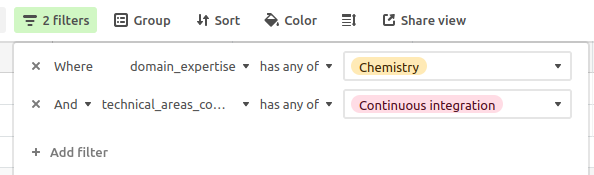

A revisão por pares de software na rOpenSci é gerenciada por uma equipe editorial. A função de Editor(a)-chefe (do inglês EiC) é alternada trimestralmente entre os(as) membros(as) experientes do nosso conselho editorial. As informações sobre o status atual de todas as pessoas da equipe editorial estão disponíveis em nosso [Painel Editorial] (#eic-dashboard).
Se você for um editor convidado, obrigado por ajudar! Entre em contato com o editor que o convidou para lidar com uma submissão para esclarecer qualquer dúvida que você possa ter.
A comunidade da rOpenSci é o nosso melhor patrimônio. Nosso objetivo é que as revisões sejam abertas, não conflituosas e focadas na melhoria da qualidade do software. Seja respeitoso(a) e gentil! Consulte o nosso guia para revisores e também o [código de conduta] (https://ropensci.org/code-of-conduct/) para obter mais informações.
Este capítulo está estruturado para refletir a progressão típica de uma revisão de software na rOpenSci. Todas as submissões são inicialmente consideradas pelo(a) Editor(a)-chefe, que toma a decisão inicial sobre a adequação do pacote ao escopo. Em caso positivo, é designado um(a) editor(a) responsável por guiar o processo de revisão propriamente dito.
8.1 Responsabilidades do papel de Editoria-Chefe (EiC)
As pessoas que exercem o papel de Editoria-Chefe rotativo (EiCs) geralmente servem por 3 meses ou por um período acordado por toda a equipe do conselho editorial. Quem ocupa o papel de EiC é responsável pelo gerenciamento geral do processo de revisão e pelos estágios iniciais de todas as submissões.
No início de um rodízio, deve revisar o status das revisões abertas atuais no painel editorial e emitir lembretes para outros(as) editores(as) ou autores(as) de pacotes, conforme necessário.
Acompanhar todas as novas issues postados no repositório de revisão de software (software-review), para os quais deve ativar as notificações de repositório no GitHub, e também acompanhar o canal #editors-only no Slack.
Monitorar regularmente (por exemplo, semanalmente) o ritmo de todas as revisões abertas, observando o Painel de controle e lembrar outros(as) editores(as) de mover pacotes conforme o necessário.
8.1.2 Deveres de EiC para cada submissão inicial
A pessoa que exerce o papel de EiC é responsável pelo processamento inicial de todas as novas submissões. Suas principais funções são:
Decidir se uma submissão deve ou não ser considerado no escopo e prosseguir com a análise e, se for o caso,
Prosseguir com a submissão completa e designar um(a) editor(a) responsável.
8.1.2.1 Decidir sobre o escopo e a sobreposição
A pessoa que exerce o papel de EiC tem o direito de tomar decisões sobre o escopo e a sobreposição da forma mais independente possível, mas é recomendado solicitar opiniões no canal #editors-only no Slack. As decisões de escopo para software estatístico geralmente são mais fáceis do que para submissões gerais (não estatísticas), como descrito abaixo. Para cada nova pré-submissão ou submissão, a pessoa que exerce o papel de EiC deve:
Consultar as categorias descritas na seção Objetivos e escopo para tomar decisões sobre o escopo e a sobreposição para consultas de pré-submissão, indicações do JOSS ou de outros parceiros de publicação e submissões.
Inicie discussões no canal #editors-only do Slack da rOpenSci, escrevendo um resumo do software (pré-)submetido, juntamente com quaisquer preocupações que possa ter.
Se achar que não recebeu respostas suficientes após um ou dois dias, pode enviar uma mensagem no Slack mencionando toda a equipe editorial.
Deve buscar outras opiniões sobre as submissões que estejam além de suas próprias áreas de especialização.
Se uma pré-submissão ou submissão for considerada fora do escopo, a pessoa que exerce o papel de EiC deverá agradecer as pessoas que submeteram o pacote, explicar os motivos da decisão e direcionar a outros locais de publicação, se for o caso. Quando for relevante, use o texto de Objetivos e escopo com relação à evolução do escopo ao longo do tempo.
Depois de explicar uma decisão fora do escopo, comente na issue: @ropensci-review-bot out-of-scope.
Se uma consulta de pré-submissão for considerada dentro do escopo, a pessoa que exerce o papel de EiC pode realizar verificações preliminares. O modelo de editores pode ser usado para isso. Para auxiliar as respostas dos(as) autores(as) aos comentários editoriais, é útil usar uma notação inequívoca para cada comentário, como:
Meus comentários estão etiquetados com "EIC" e uma sequência numérica. Por favor, use esta notação em suas respostas."
**EIC01** Por favor, melhore o README
Também pode ser útil distinguir requisitos de recomendações, por exemplo, formatando os requisitos como caixas de seleção (- [ ] **EIC01**). É claro que você pode usar os prefixos que quiser, inclusive suas próprias iniciais, como neste exemplo de um de nossos editores, Mauro Lepore.
As decisões sobre o escopo podem exigir informações adicionais de quem submeteu o pacote. A pessoa que ocupa o papel de EiC deve garantir, no mínimo, que a documentação seja suficiente para julgar o escopo, incluindo um site que a acompanhe. Se não for o caso, solicite mais detalhes; mesmo que um pacote seja considerado fora do escopo, solicitar melhorias na documentação do pacote só ajudará outras pessoas a entenderem o pacote. Este é um exemplo de solicitação:
Olá <username>, agradecemos muito por sua submissão.Estamos discutindo se o pacote está dentro do escopo e precisamos de um pouco mais de informações.Você poderia adicionar mais detalhes e contexto ao README?Após a leitura do README, alguém com pouco conhecimento específico sobre o tema deve ser capaz de compreender o propósito, os objetivos e a funcionalidade do pacote.<opcional>Se um pacote possui funcionalidades que se sobrepõem às de outros pacotes, solicitamos que seja demonstrado na documentação [como ele se diferencia em comparação a pacotes semelhantes](https://devguide.ropensci.org/policies.html#overlap).Você poderia adicionar ao README uma comparação mais detalhada em relação aos pacotes mencionados, para que possamos avaliar?</opcional>
8.1.2.2 Deveres iniciais de EiC para submissões completas
Quando a pessoa que ocupa o papel de EiC estiver convencida de que um pacote pode prosseguir para uma submissão completa, convide as pessoas que submeteram o pacote a abrir uma issue de submissão completa e, em seguida, feche a issue de consulta de pré-submissão.
Inicialmente, marque cada novo envio completo com 0/editorial-team-prep
Encontre alguém da equipe editorial para que fique responsável pelo envio (incluindo você, potencialmente). As pessoas da equipe editorial atualmente disponíveis estão indicadas no Painel editorial As cargas de trabalho editoriais devem ser distribuídas da maneira mais uniforme possível, consultando os gráficos de cargas editoriais recentes no Painel editorial. A pessoa que ocupa o papel de EiC também pode recrutar alguém como editora convidada para acompanhar alguma submissão, conforme descrito na subseção abaixo.
Atribua uma pessoa para realizar a edição, escrevendo um comentário na issue de revisão:
@ropensci-review-bot assign @username as editor
Isso também adicionará na issue a etiqueta 1/editor-checks.
8.1.2.3 Submissões de software estatístico
O software estatístico deve ser considerado no escopo, desde que esteja em conformidade com > 50% de todas as normas aplicáveis. Se uma consulta pré-submissão indicar que os padrões já foram cumpridos, a pessoa que ocupa o papel de EiC deverá:
Use @ropensci-review-bot check srr para confirmar que as normas foram cumpridas.
Considere se o pacote é melhor colocado na categoria estatística indicada ou se categorias alternativas ou adicionais podem ser apropriadas.
Se as normas ainda não tiverem sido cumpridas, a pessoa que ocupa o papel de EiC deve pedir para os(as) autores(as) que avaliem se acham que o pacote será capaz de cumprir pelo menos metade de todos os normas gerais e específicas da categoria. Isso pode exigir uma discussão sobre a categoria ou categorias apropriadas. Se o(a) autor(a) não tiver cumprido as normas, mas concordar em fazê-lo, geralmente deverá ser aplicado uma etiqueta de “Holding” na issue, até que o @ropensci-review-bot check srr dê uma aprovação (✅). Os detalhes completos sobre o acompanhamento de submissões de software estatístico pelo(a) EiC são fornecidos no capítulo correspondente do Guia de desenvolvimento de pacotes estatísticos.
8.1.3 O Painel Editorial da rOpenSci
O Painel Editorial da rOpenSci é atualizado diariamente, principalmente pela extração de informações sobre todas as issues de revisão de software no GitHub, juntamente com informações adicionais do Slack e do nosso banco de dados no Airtable. O painel fornece uma visão geral atualizada da nossa equipe editorial, suas responsabilidades recentes e o estado atual de todas as issues de revisão de software. Quem ocupa o papel de EiC (ou qualquer pessoa interessada) pode obter uma visão geral do status, da disponibilidade e das cargas de trabalho recentes da equipe editorial na página sobre a equipe editorial. Ela deve ser usada para encontrar e designar editores(as) para novas edições de revisão de software. Uma visão geral de todas as revisões de software atuais está disponível na página de Revisão de Software, com linhas coloridas por “urgência”, resumida na tabela na parte inferior da página.
As tarefas para revisões nos estágios específicos de revisão incluem:
Revise os envios em 0\/presubmission e 1\/editorial-team-prep para verificar se alguma ação precisa ser tomada (como sondar a equipe editorial, tomar decisões, colocar edições em espera, mencionar pessoas para solicitar atualizações ou encontrar e designar pessoas editoras).
Revise os envios em 2\/seeking-reviewer(s) para garantir que as coisas estejam progredindo rapidamente. Se a busca de revisores(as) estiver demorando muito (cor vermelha), verifique se o envio está em espera, leia a conversa da issue para obter o contexto e entre em contato com a pessoa editora responsável no privado para pedir mais informações.
Revise os envios em 3\/reviewer(s)-assigned. Se ainda faltarem avaliações depois de um tempo muito longo (cor vermelha), verifique se o envio está em espera, leia a conversa da issue para obter o contexto e entre em contato com a pessoa editora responsável no privado para pedir mais informações.
Revise os envios em 4\/review(s)-in-awaiting-changes. Se alguns ainda não tiverem uma resposta do(a) autor(a) depois de um tempo excepcionalmente longo (cor vermelha), verifique se o envio está em espera, leia a conversa da issue e entre em contato com a pessoa editora responsável no privado para pedir mais informações.
8.1.4 Convidando uma pessoa para a tarefa de edição
Depois de discutir com a equipe editorial, o(a) EiC pode convidar uma pessoa externa para acompanhar uma submissão. Pode ser desejado ou necessário convidar pessoas para a tarefa de edição se houver necessidade de especialização em um domínio específico, se o volume atual de envios for grande, se potenciais editores(as) tiverem conflitos de interesse ou como um teste antes de convidar uma pessoa para fazer parte da equipe editorial.
Para decidir sobre convidar alguém para a tarefa de edição de uma submissão:
Crie um canal privado do Slack chamado #guest-editor-.
Convide a equipe editorial para este canal.
Busque os canais arquivados semelhantes do Slack para obter possíveis recomendações.
Depois que uma decisão for tomada e a pessoa convidada tenha aceitado, arquive o canal.
Quando você convidar uma pessoa externa para a edição,
Convide-a para a equipe ropensci/editors e para a organização ropensci no GitHub,
Depois que ela aceitar o convite do repositório, atribua a issue a ela,
Certifique-se de que ela (já) esteja convidada para o espaço de trabalho do Slack da rOpenSci,
Peça a alguém da equipe para adicionar o nome da pessoa convidada à tabela de editores(as) convidados(as) do Airtable (para que seus nomes apareçam neste livro e no README da revisão do software).
Depois que o processo de revisão for concluído (pacote aprovado, issue fechada),
Agradeça novamente à pessoa convidada,
Remova-o da equipe ropensci/editors no GitHub (mas não da organização ropensci).
8.2 Responsabilidades gerais dos(as) editores
Além de lidar com as submissões, conforme descrito na seção a seguir, os(as) editores opinam sobre as decisões editoriais do grupo, como, por exemplo, se as submissões estão dentro do escopo, e orientam as atualizações de nossas políticas. Geralmente, fazemos isso por meio do Slack, que esperamos que os(as) editores possam verificar regularmente.
Você só precisa acompanhar suas próprias submissões, mas se notar um problema com um pacote que está sendo acompanhado por outra pessoa, sinta-se à vontade para levantar esse problema diretamente com a pessoa responsável pela edição, ou escrever uma mensagem com a preocupação no canal exclusivo para a equipe editorial no Slack (editors-only). Por exemplo:
Você sabe de um pacote que gere uma sobreposição, e que ainda não foi mencionado no processo.
Você vê uma pergunta para a qual tem uma resposta especializada que não foi dada depois de alguns dias (como um link para uma publicação de blog que pode responder a uma pergunta).
8.3 Responsabilidades de edição de um pacote
As pessoas designadas como editoras de um pacote (handling editors) são responsáveis por orientar cada submissão designada durante todo o processo, desde o envio inicial até o aceite final. Cada pessoa da equipe editorial não deve ser designada para mais de uma edição por trimestre, ou no máximo quatro por ano.
8.3.1 Após a submissão
8.3.1.1 Checagens automáticas
A submissão gerará automaticamente o resultado da checagem de pacotes do robô de revisão da rOpenSci (ropensci-review-bot). Todas as falhas de checagem (❌) devem ser corrigidas antes de prosseguir, embora exceções possam ser justificadas a critério da pessoa responsável pela edição. Incentive a pessoa que submeteu o pacote a acionar as checagens chamando @ropensci-review-bot check package para confirmar que todas as verificações foram aprovadas (✅).
Examine todos os itens marcados com 👀 e solicite mais informações ou ações da pessoa que submeteu o pacote, quando apropriado.
Para submissões estatísticas (identificáveis como “Submission Type: Stats” no modelo da edição), adicione a etiqueta “stats” à issue de edição (se ainda não tiver sido adicionada).
Se a pessoa que submeteu o pacote apontar que “incorporou a documentação de normas… por meio do pacote srr”, então chame @ropensci-review-bot check srr para confirmar que pelo menos 50% de todas as normas foram cumpridas.
Verifique se o modelo de issue foi preenchido corretamente. Os erros e omissões mais comuns devem ser detectados e anotados pelo robô, mas uma verificação manual sempre ajuda. As pessoas editoras podem editar os modelos diretamente para fazer pequenas correções ou podem orientar os(as) autores(as) a preencher os campos obrigatórios do modelo que possam estar faltando.
O sistema de checagem passa por um rebuild toda terça-feira, às 00:01 UTC, e pode levar algumas horas. Se as checagens automáticas falharem nesse horário, aguarde algumas horas e tente novamente.
As chegagens automáticas também incluem uma seção expansível de Propriedades estatísticas que fornece detalhes. A seção expansível sinaliza quaisquer propriedades “notáveis”, definidas como aspectos que se encontram no quinto percentil superior ou inferior em comparação com os valores de todos os pacotes atuais do CRAN. Preste atenção especial a:
Valores extremamente grandes ou pequenos para linhas de código (“loc”).
Valores extremamente grandes ou pequenos para números de funções (“n_fns_…”).
O relatório automatizado também incluirá um link para uma página de visualização de rede interativa de chamadas entre objetos no pacote. Essa visualização pode fornecer informações úteis sobre como as funções em um pacote são estruturadas. Use todas essas informações para avaliar se:
Um pacote tem muito poucas funções ou linhas de código e, nesse caso, pode não estar suficientemente desenvolvido para a revisão por pares.
Um pacote é extremamente grande e, nesse caso, pode acabar sobrecarregando os(as) revisores. Por exemplo, essa checagem inicial revelou um pacote com mais de 8.500 linhas de código R (correspondendo a 97,6% de todos os pacotes) e 251 funções em R exportadas.
8.3.1.2 Comentários editoriais iniciais
Depois que as checagens automáticas forem postadas, use o modelo de edição para orientar as verificações iniciais (se ainda não estiverem cobertas pelo(a) EiC) e registre sua resposta na issue de submissão. Você também pode simplificar as verificações de editor(a) usando o pacote pkgreviewr, criado pela ex-editora Anna Krystalli. Por favor, tente concluir as verificações e começar a buscar revisores(as) dentro de 5 dias úteis.
Verifique as políticas em busca de possíveis ajustes e sobreposições. Se necessário, inicie uma discussão por meio do canal #software-review do Slack para casos extremos que não tenham sido detectados por verificações anteriores do EiC. Se houver rejeições, consulte esta seção sobre como responder.
Para pacotes que precisam de integração contínua em várias plataformas (veja os critérios nesta seção do capítulo sobre CI), certifique-se de que o pacote seja testado em várias plataformas (tendo o pacote criado em vários sistemas operacionais por meio do GitHub Actions, por exemplo).
O ideal é que você faça observações e estas sejam resolvidas antes que revisores comecem a revisar.
Se as verificações iniciais mostrarem grandes lacunas, solicite alterações antes de designar revisores. Se o(a) autor(a) mencionar que as alterações podem levar tempo, aplique a etiqueta de espera escrevendo @ropensci-review-bot put on hold. Você receberá um lembrete a cada 90 dias na issue de edição para verificar com os(as) autores(as) do pacote.
Se o pacote levantar uma nova questão em relação às políticas da rOpenSci, inicie uma conversa no Slack.
8.3.2 Busque e atribua duas pessoas para revisar o pacote
8.3.2.1 Encontrar revisores(as)
Escreva na issue@ropensci-review-bot seeking reviewers.
Use o modelo de e-mail, se necessário, para convidar pessoas para a revisão
Ao convidar revisores(as), inclua algo como “se eu não tiver notícias suas em uma semana, presumirei que você não poderá revisar”, para dar um prazo claro para que você procure outra pessoa.
Você pode enviar vários convites ao mesmo tempo, especialmente porque isso geralmente ajuda a encontrar revisores(as) mais rapidamente. Você sempre pode responder dizendo que uma pessoa já foi encontrada para fazer a revisão, e agradecer às pessoas por se oferecerem.
As fontes de informação para encontrar revisores(as) incluem:
Sugestões possíveis feitas por quem submeteu o pacote, (embora possam ter uma visão restrita dos tipos de conhecimentos necessários; sugerimos que você não use mais que um dos nomes indicados);
Nosso banco de dados Airtable de revisores(as) e voluntários(as) (consulte a próxima subseção);
Quando essas fontes de informação não forem suficientes,
peça ideias para a equipe editorial no Slack.
Busque pessoas que usam o pacote ou o serviço/fonte de dados ao qual o pacote se conecta (verificando quem abriu issues no repositório, marcou o repositório com estrela, citou em artigos ou mencionou o pacote nas redes sociais).
Você também pode procurar autores(as) de pacotes relacionados em r-universe.dev.
A R-Ladies tem um diretório especificando as habilidades e os interesses das pessoas listadas.
Você pode publicar uma busca por revisores(as) nos canais #general e/ou #software-review no Slack da rOpenSci ou nas redes sociais.
8.3.2.1.1 Dicas para a pesquisa de revisores(as) no Airtable
Você pode usar filtros, classificações e pesquisas para identificar revisores(as) com experiência específica:

Captura de tela da interface em inglês de filtros do Airtable com um filtro de experiência de domínio que deve incluir química e áreas técnicas que devem incluir integração contínua
Por favor, verifique a avaliação mais recente do revisor(a) e evite qualquer pessoa que tenha avaliado alguém nos últimos seis meses. Além disso, verifique se um revisor(a) iniciante indicou que precisou de mentoria (require_mentorship). Nestes casos, use a parte de orientação do modelo de e-mail e esteja preparado para fornecer orientações adicionais.
8.3.2.1.2 Critérios para escolher um(a) revisor(a)
Aqui estão os critérios que você deve ter em mente ao escolher alguém para revisar um pacote. Talvez você precise reunir essas informações pesquisando no r-universe, no perfil do GitHub do(a) possível revisor(a) e na presença on-line em geral (site pessoal, redes sociais).
Não revisou um pacote para nós nos últimos 6 meses.
Tem alguma experiência em desenvolvimento de pacotes.
Tem alguma experiência de domínio no campo do pacote ou da fonte de dados.
Tente equilibrar sua percepção da experiência do(a) possível revisor(a) com a complexidade do pacote.
Diversidade - com duas pessoas revisoras, ambas não devem ser homens brancos cis.
Alguma evidência de que a pessoa tenha interesse em práticas abertas ou em atividades da comunidade de R, embora o contato direto via e-mail seja válido.
Cada submissão deve ser analisada por duas pessoas revisoras de pacotes. Embora seja bom que um(a) deles tenha menos experiência em desenvolvimento de pacotes e mais conhecimento do domínio, a revisão não deve ser dividida em dois. Ambos(as) os(as) revisores(as) precisam revisar o pacote de forma abrangente, embora sob suas perspectivas específicas. Em geral, pelo menos um(a) revisor(a) deve ter experiência prévia em revisão e, é claro, convidar uma nova pessoa amplia nosso grupo de revisores(as).
8.3.2.2 Atribuir revisores(as)
Atribua a cada revisor(a) com o comando @ropensci-review-bot assign @username as reviewer. Um comando deve ser emitido para cada revisor(a). Se necessário remover alguém da revisão, use o comando @ropensci-review-bot remove @username from reviewers.
As datas de vencimento das revisões são definidas por padrão como 21 dias (3 semanas) após a data da atribuição.
Se você quiser alterar a data de vencimento de uma revisão, use @ropensci-review-bot set due date for @username to YYYY-MM-DD.
8.3.3 Durante a revisão
Consulte ocasionalmente com as pessoas revisoras e autoras do pacote. Ofereça esclarecimentos e ajuda conforme necessário.
Em geral, tente estabelecer um prazo de 3 semanas para a revisão, 2 semanas para os ajustes solicitados, e 1 semana para que os(as) revisores(as) aprovem as mudanças.
Após o envio de cada revisão,
Escreva um comentário agradecendo o(a) revisor(a), com suas próprias palavras.
Registre a revisão escrevendo um novo comentário @ropensci-review-bot submit review <review-url> time <time in hours> como neste exemplo.
Quando as alterações forem feitas, altere a etiqueta de status da revisão para 5/awaiting-reviewer-response e solicite que os(as) revisores(as) indiquem a aprovação usando o modelo de aprovação de revisão.
Se as pessoas autoras tiverem a intenção de enviar um manuscrito de acompanhamento do tipo Applications no periódico Methods in Ecology and Evolution, indique que o envio do manuscrito pode ser feito após a conclusão da revisão.
8.3.3.1 Respondendo às perguntas dos(as) revisores(as)
Tanto os(as) autores(as) quanto os(as) revisores(as) podem solicitar feedback sobre aspectos de um processo de revisão, incluindo, por exemplo, o tom ou a substância das revisões ou das respostas dos(as) autores(as). Embora este guia se esforce para fornecer orientação suficiente para a maioria dos casos, outras pessoas da equipe editorial estão sempre à disposição para esclarecer dúvidas. Se você notar algo que possa ser editado ou adicionado de forma produtiva neste Guia de desenvolvimento, por favor, abra uma issue ou um pull request. Além desses princípios gerais, essas revisões fornecem exemplos úteis:
O pacote slopes, que acabou sendo fundamentalmente redesenhado em resposta às revisões. Todas as revisões foram sempre totalmente construtivas, o que parece ter desempenhado um papel importante na motivação dos(as) autores(as) para embarcar em uma revisão tão grande. Comentários como, “este pacote não …” ou “não tem …” eram invariavelmente seguidos de sugestões construtivas sobre o que poderia ser feito (há, por exemplo, várias sugestões em uma das primeiras revisões).
O pacote bowerbird recebeu uma “pré-revisão” útil, que resultou na divisão do pacote antes das revisões propriamente ditas.
Outros desafios que podem surgir durante a revisão incluem:
Se o(a) autor(a) parar de responder consulte as políticas e/ou envie uma mensagem para a equipe editorial no canal do Slack para discussão. É importante ressaltar que, se um(a) revisor(a) foi atribuído(a) a uma issue fechada, entre em contato com ele(a) quando fechar a issue para explicar a decisão e agradecer mais uma vez pelo trabalho. Informe a equipe editorial no canal Slack para que eles(as) sejam considerados revisores(as) de um pacote no futuro, com grandes chances de uma revisão de software tranquila.
Se um(a) revisor(a) estiver em atraso com a revisão ou parar de responder, envie um lembrete após uma semana e novamente após duas semanas. O primeiro lembrete pode ser uma menção (@tag) no GitHub. Depois disso, use o e-mail ou outra forma de comunicação direta. Se após três semanas ainda não houver resposta, determine a melhor maneira de seguir em frente sem essas pessoas:
Se o(a) revisor(a) já tiver enviado sua revisão primária e outro(a) revisor(a) estiver ativo(a) e fornecendo feedback substancial, o(a) editor(a) poderá prosseguir com o processo de revisão e deverá assumir o papel do(a) revisor(a) ausente para determinar se as alterações dos(as) autores(as) são suficientes.
Se o(a) revisor(a) ausente não tiver enviado sua revisão, o(a) editor(a) deverá tentar encontrar uma nova pessoa para fazer a revisão e prosseguir com o processo quando houver duas revisões. Nesse ponto, o(a) editor(a) deve priorizar a busca de revisores(as) experientes que possam se comprometer com uma resposta rápida. Não se esqueça de enviar mensagens para a equipe editorial no Slack.
A seu critério, o(a) editor(a) pode optar por realizar a segunda revisão, mas só deve fazê-lo após várias tentativas fracassadas de encontrar um(a) novo(a) revisor(a) e se o(a) editor(a) tiver experiência suficiente para fazê-lo. Não recomendamos que os(as) editores(as) façam isso com frequência, pois isso aumenta a carga de trabalho e reduz a diversidade de pontos de vista trazidos à comunidade pelos(as) revisores(as).
Em qualquer caso, escreva um comentário agradecendo a pessoa revisora original e a remova com o comando @ropensci-review-bot remove @username from reviewers.
8.3.4 Após a revisão
Aprove o pacote com @ropensci-review-bot approve <package-name>
Consulte a seção a seguir para saber como permitir que os(as) autores(as) mantenham o pacote em sua própria organização do GitHub se preferirem não transferir para a rOpenSci.
Indique o pacote para que seja apresentado em uma publicação ou nota técnica do blog da rOpenSci, se você achar que ele pode ser de grande interesse. Anote na issue de revisão do software uma ou duas coisas que o(a) autor(a) poderia destacar e marque @ropensci/blog-editors para acompanhamento.
Se os(as) autores(as) mantiverem um livro on-line que seja, pelo menos em parte, sobre o pacote, entre em contato com alguém da equipe da rOpenSci para que possam entrar em contato com os(as) autores(as) sobre a transferência para a organização do GitHub ropensci-books.
8.3.4.1 Pacotes que permanecem nas organizações originais do GitHub
Para autores(as) de pacotes que desejam manter seus repositórios em suas organizações originais do GitHub, em vez de transferi-los para github.com/ropensci, os editores devem:
Pedir aos autores de pacotes que façam um pull request para o arquivo JSON que lista todos os repositórios que não foram transferidos. Exemplo de commit.